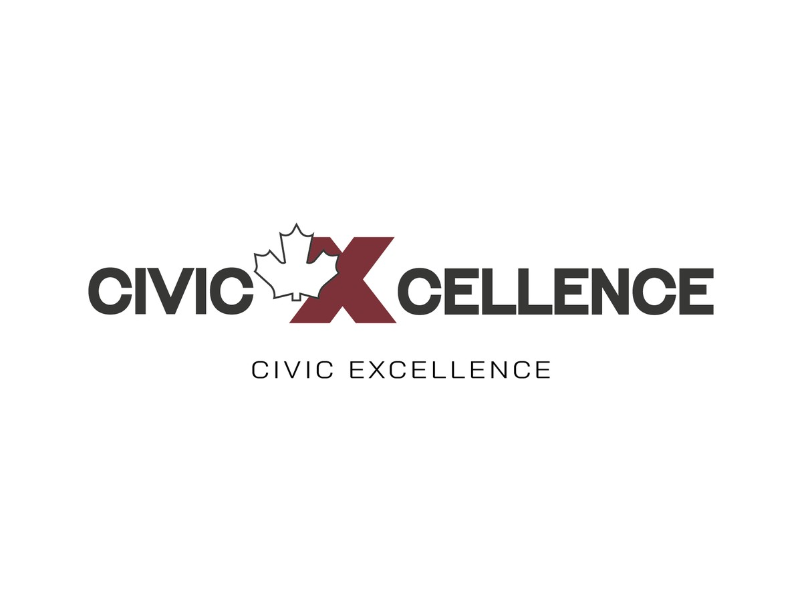
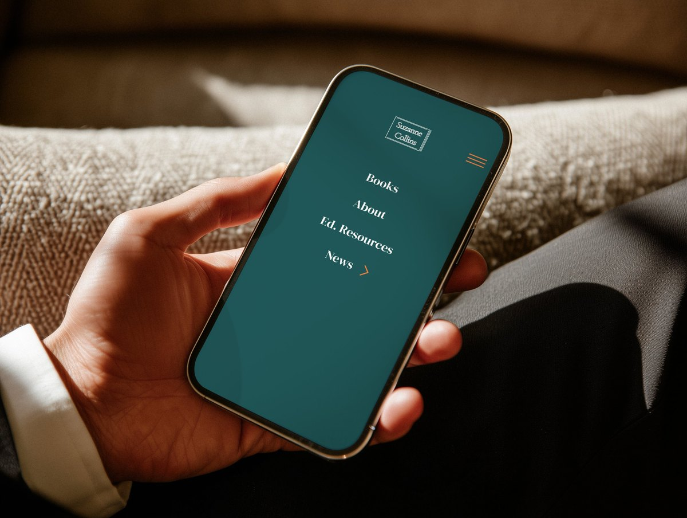
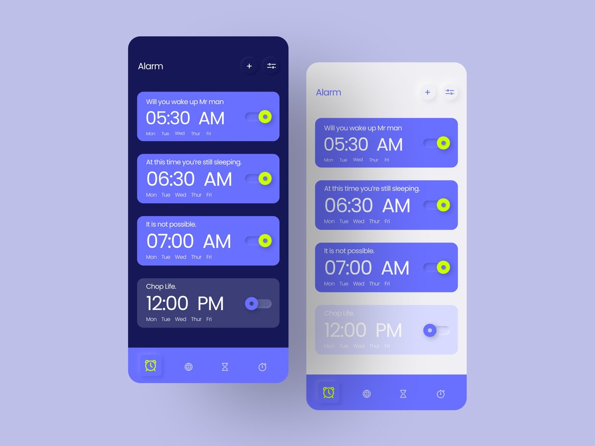
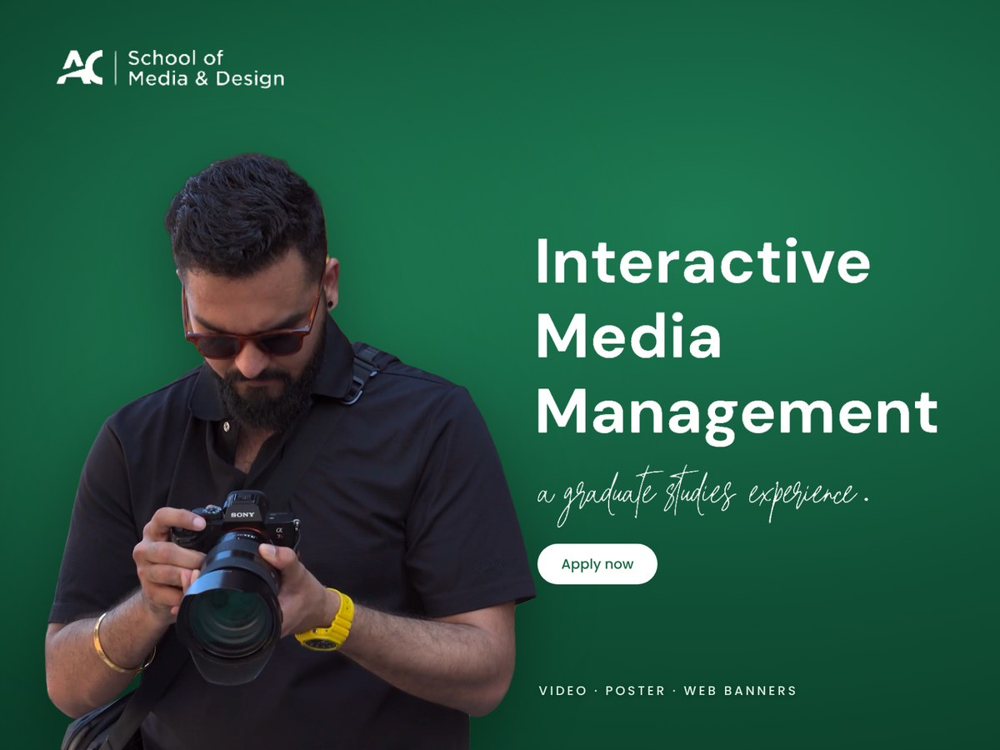
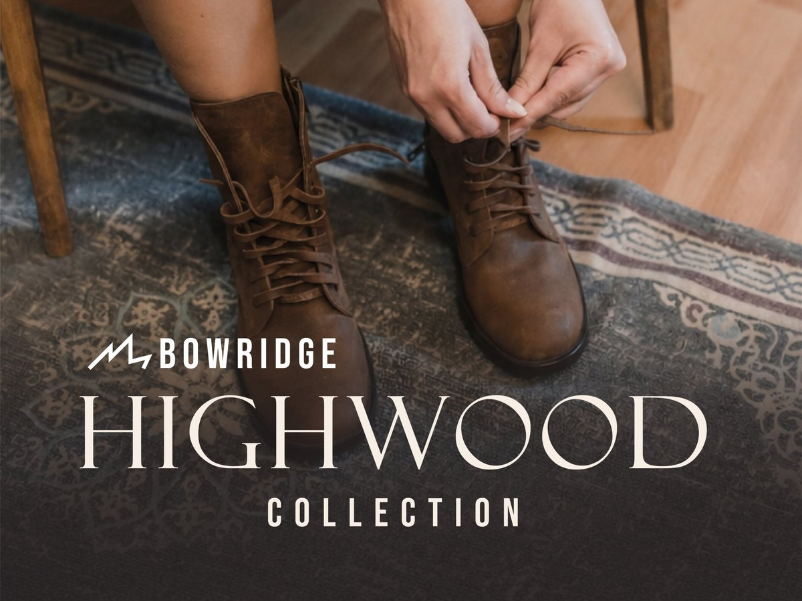
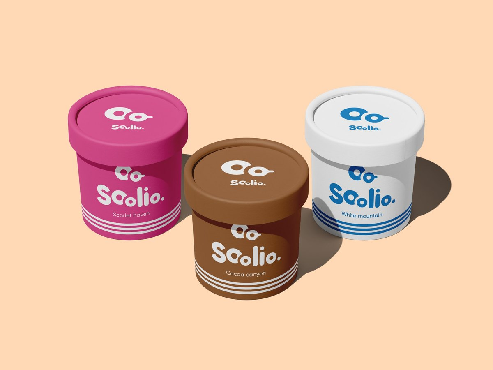
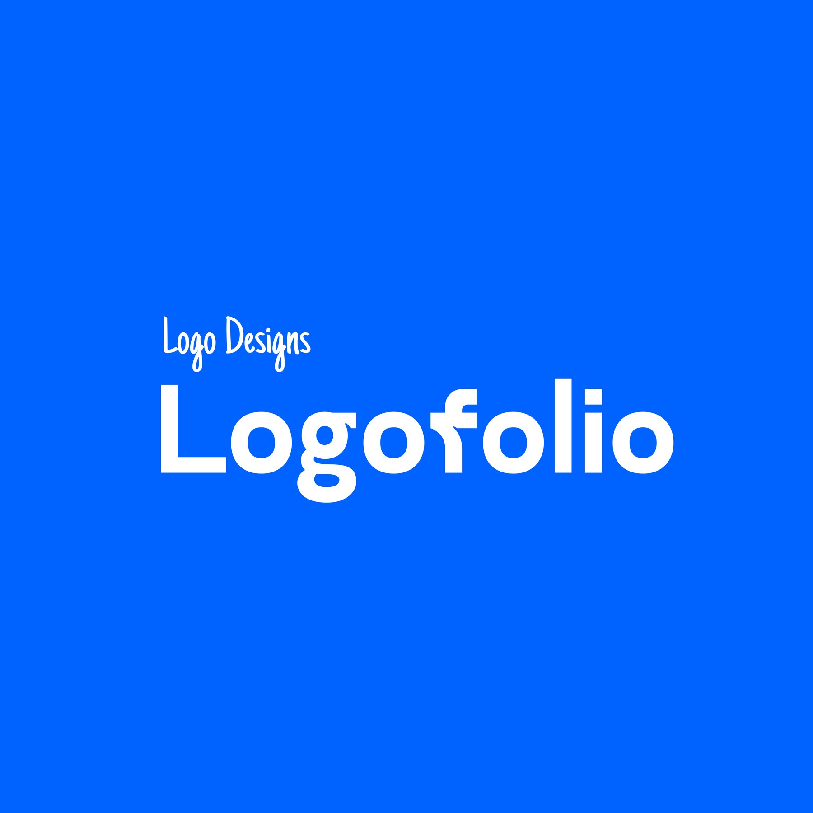

LaughterOtulana
I design simple, functional work that people notice, from research-led digital products to brand identities and campaigns.
- Based in
- Calgary, Alberta
- Background
- Architecture, then UX and graphic design
- Most recently
- Junior graphic designer, Manitobah Mukluks
- Status
- Open to new roles
UX design
Research-led products, from interviews and usability testing to Figma prototypes.

CivicXcellence
A five-stage learning program that helps high school teachers make civics stick.

Suzanne Collins website redesign
A mobile concept redesign that turns a wall of text into a site readers can find their way around.

Quick Meal
A food delivery app designed around what frustrates busy people.

Mobile clock app
A neumorphic redesign of an Android-style clock app, in light and dark modes.
Graphic design
Brand identities, packaging, campaigns and print-ready files.

Interactive Media Management campaign
A multi-format campaign to bring more students to Algonquin College’s Interactive Media Management program.

Bowridge spring campaign
A spring launch email and Instagram set for a made-up Calgary boot brand.

Soolio Ice Cream
Identity and packaging for an ice cream brand that celebrates indulgence and comfort.

Logofolio
Personal logo explorations, each tested on packaging and apparel mockups.
Photography
Personal photography about texture, pattern and light, from city walls to winter details. Tap a photo to see it full size, then use the arrows or swipe to browse.
How I work
Structure first
Training as an architect taught me to plan before I decorate. I work out the hierarchy, the grid and the route someone takes through the work before I add style.
Start with people
Interviews, usability sessions and thematic analysis tell me what to fix. I design for what people actually do, not what I assume they do.
Craft that holds up
I make social posts, emails, packaging and print-ready files that stay true to a brand system, even with several deadlines at once.